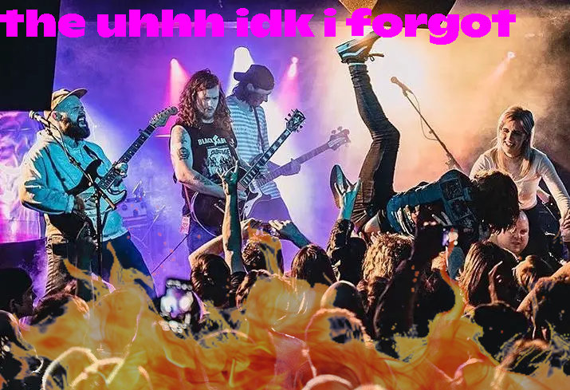
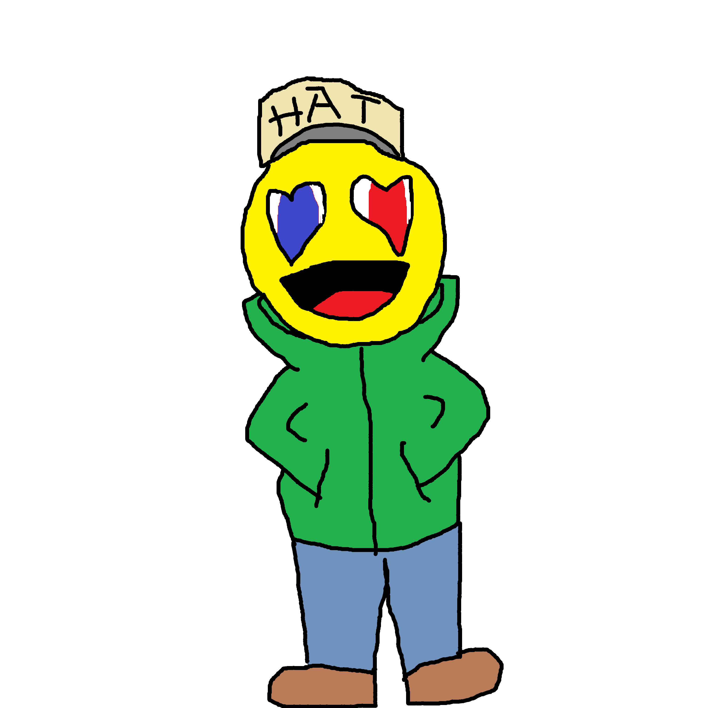
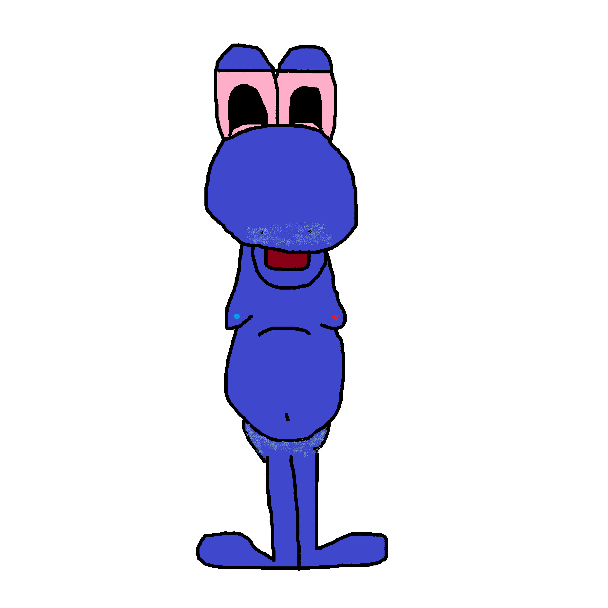
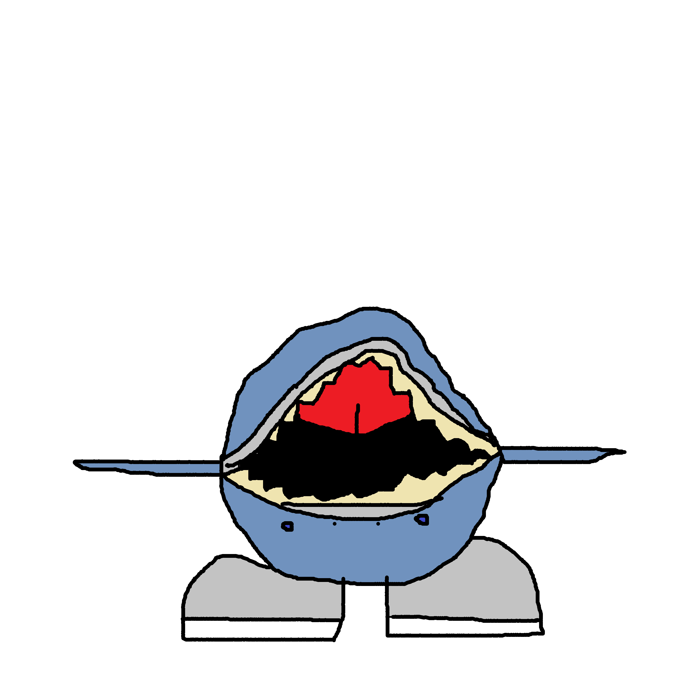
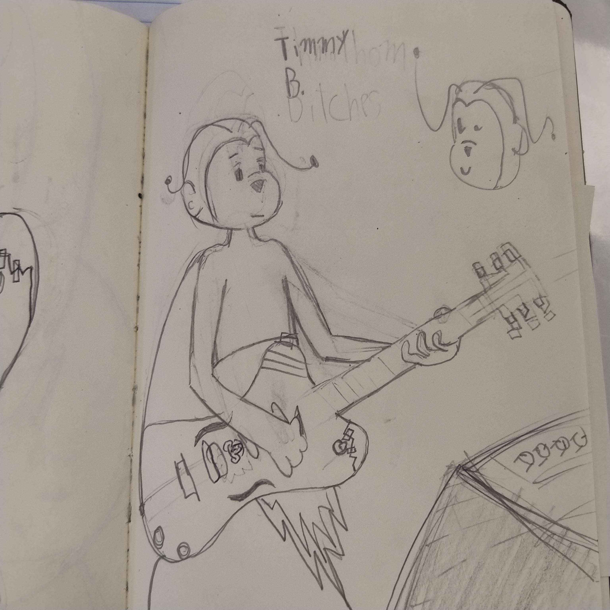

October 20XX, Ral C and LizardFuck, childhood friends, come together to enter a contest to make the music theme for a new local show called "Company Jump En Dium" (co.jumpendium for short), they make a really shitty song but since the company is failing and almost nobody submitted, they win the competition but are required to be known as a band to win the prize of a real living shark, they come up with the best name ever, a name so good everyone who heard it thought it was the best name of all time, unfortunately, when Lizardfuck went to register it on the telephone, he had forgotten and said "The uhhhhh.... idk I forgot" and so it was born
the shark they won ended up being a shark with shoes whose name was in Arabic so they just named him Emmy 8 after the shoes he was wearing
Emmy had a best friend named Timothon and he introduced Timothon to the rest of the band
Timothon Bitches' back story is that an employee of Joey Drew Studios (yes the uhhh idk I forgot is in the same universe as bandy and the ink machine) made a joke sex tape of the characters while also including him as a character, the employee got banned but Timothon gained life
plague appeared when Lizardfuck's mom was dying from the black plague, so Ral c wanted to comfort Lizardfuck with the loss of his mother by bringing plague into the band as an honorary member
The Uhhh Idk i Forgot Members:
Ral "The Best" Cobbstone (Pre-Timeskip)
Ral "Jacob Pickles" Cobbstone (Post-Timeskip)
Lizardfuck "Fuck" Fuck
القرش "Emmy Eighties" الطائر
Timothon "Sex Devil" Bitches
Ex-Members:
Goog Le "Translator Woman" Tran Slate
Bubonic "Plague Praga" Yersinia Pestis
Micheal Fetus (dead)
Please enjoy this beautiful artwork:
Ral C. - Lizardfuck F. - Emmy 8. - Timothon B.



